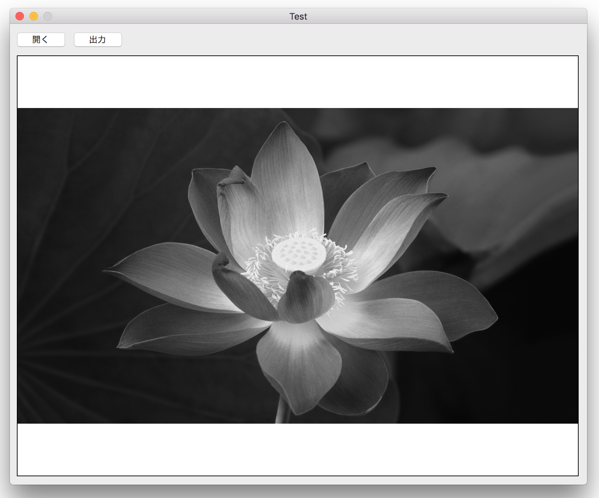
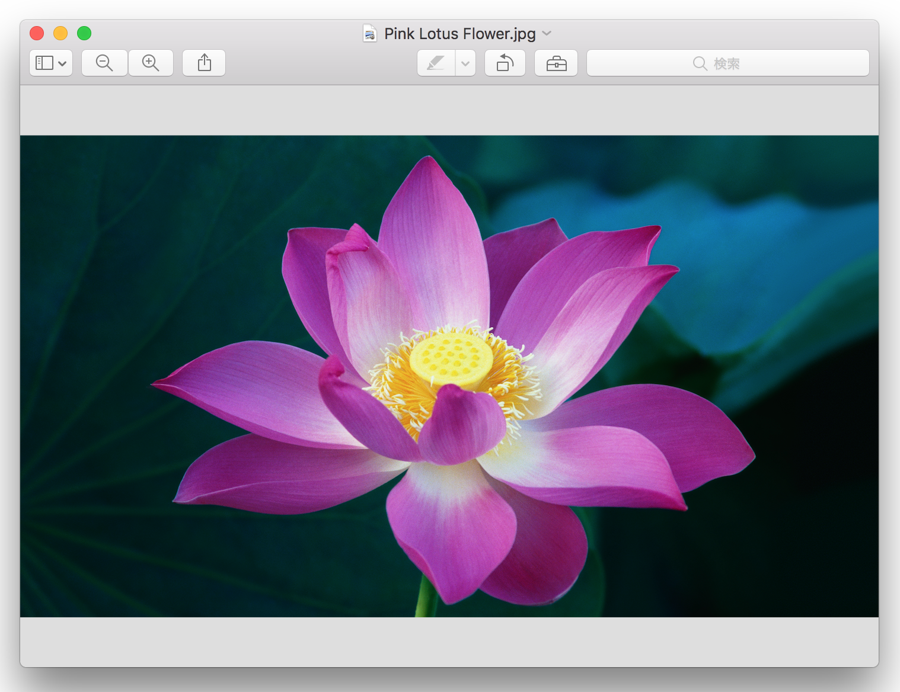

ビットマップを操作してイメージをグレースケールにする
イメージファイル（jpeg, png）を読み込み、ビットマップ操作によりイメージをグレースケール化し画面に表示する。また、変換後のイメージをpngファイルとして出力する。

元のイメージ

データフロー図
![[データフロー図]](/lib/HTMLofImage.html?filename=/data/88/bitmapOpe3.png&title=データフロー図&width=700)
実装のポイント
イメージファイル（jpeg, png）を読み込み、CGImageオブジェクトに変換する
イメージのグレースケール化
CGImageオブジェクトからビットマップコンテキストを作成する。ビットマッップの各ピクセルからRGB要素を取得し、グレースケールを計算した後、RGB値に描き戻す。ビットマップのRGB値への参照は、bindMemoryメソッドを使用して、Cポインタ経由で行う。よって unsafe である。グレースケールを求める係数はいくつかあり、ここでは、HDTV係数を使用している。他には、NTSC係数などがある。
CGImageオブジェクトをpng形式のファイルに出力する